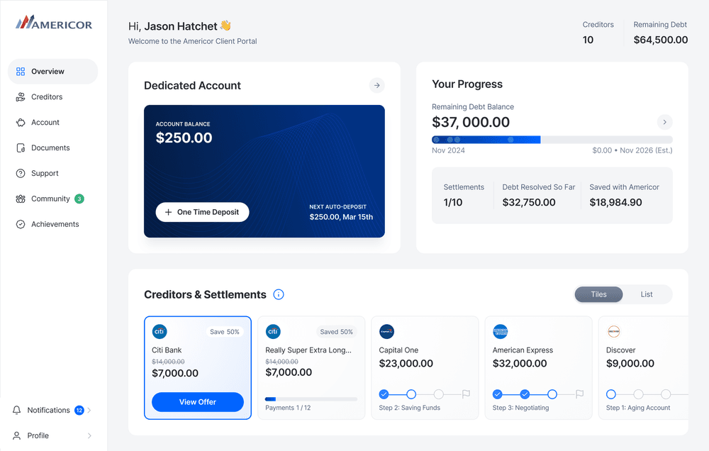

CS/01
Designer
Redesigning how Americans escape debt — a multi-brand fintech rebuild.
Audited three platforms, unpacked a ghost design system that never existed as components, and shipped a 4-layer token architecture: root → semantic → brand → platform. Every screen now speaks one language across iOS, Android and web.